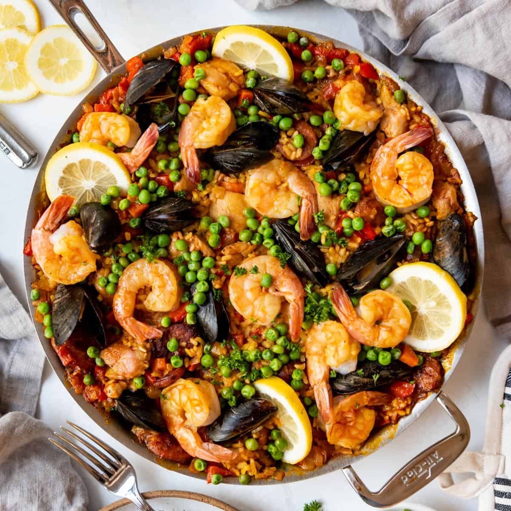

Ingredients:
- 2 cups bomba rice (or other short-grain rice)
- 4 cups chicken broth
- 1 cup white wine
- 1/2 cup olive oil
- 1 onion, finely chopped
- 4 cloves garlic, minced
- 1 red bell pepper, sliced
- 1 yellow bell pepper, sliced
- 1 tomato, diced
- 1 teaspoon smoked paprika
- 1/2 teaspoon saffron threads
- 1 pound mixed seafood (shrimp, mussels, squid)
- 1/2 cup frozen peas
- Lemon wedges for serving
- Salt and pepper to taste
Cooking Instructions:
- In a small bowl, dissolve saffron threads in warm chicken broth and set aside.
- Heat olive oil in a large paella pan over medium heat. Add chopped onion and garlic, sauté until softened.
- Add sliced bell peppers and diced tomato to the pan, cook until vegetables are tender.
- Stir in bomba rice, smoked paprika, and saffron-infused chicken broth. Season with salt and pepper.
- Arrange mixed seafood on top of the rice and distribute evenly. Pour white wine over the mixture.
- Reduce heat to low and simmer until rice is cooked and seafood is cooked through, about 20 minutes.
- In the last 5 minutes of cooking, scatter frozen peas over the paella.
- Remove from heat, cover with a kitchen towel, and let it rest for a few minutes.
- Serve paella hot, garnished with lemon wedges.